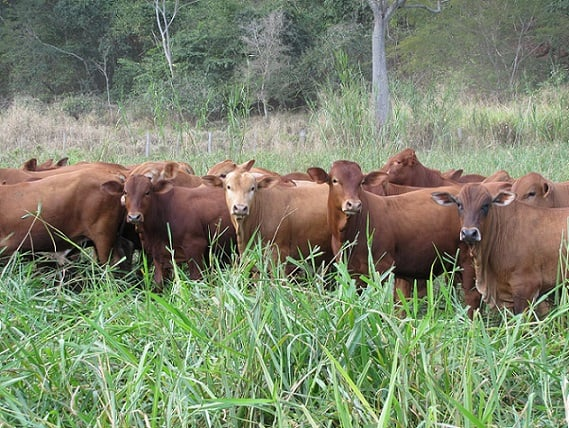

pinhalzinho agro notícias
sobre nós
entrar
Últimas noticias
Compagás investe R$ 505 milhões e entra na cadeia do biometano
Importação de soja é recorde para o mês de maio
O que o setor agro do PR espera do Plano Safra 24/25

PR quer recuperar 350 mil hectares de pastagens degradadas até 2030
Plantio de trigo alcança 91% de área no PR, indica Deral